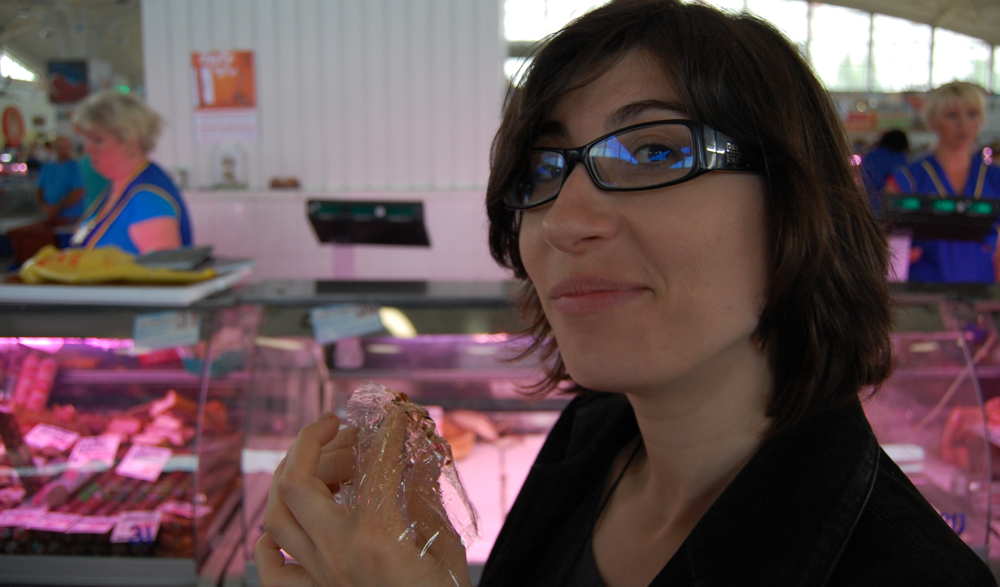

Maryia (Masha) Fedzechkina

I’m a postdoctoral fellow in the Department of Psychology at the University of Pennylvania. I work with John Trueswell and Lila Gleitman. Before coming to Penn, I did my PhD with T. Florian Jaeger and Lissa Newport at the University of Rochester, which was a lot of fun.
My work focuses on the intersection of psycholinguistics and linguistic typology, seeking to understand the nature of individual-level constraints on language use and their impact on language structure.